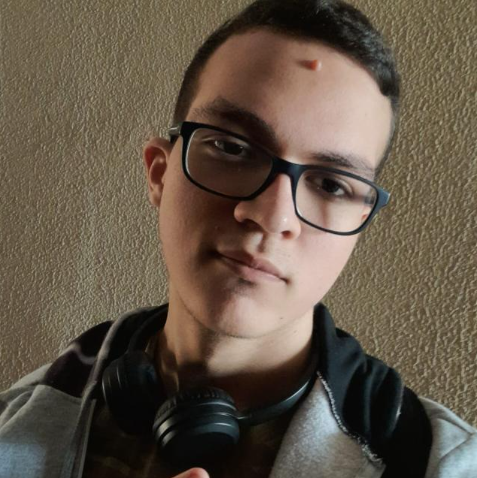
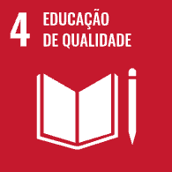

Dados Pessoais
- email Email: juliano.massocalegal@gmail.com
- link LinkedIn: https://www.linkedin.com/in/juliano-massoca
- location_on Cornélio Procópio, Paraná
Resumo
Aluno de Engenharia de Computação da Universidade Tecnológica Federal do Paraná, Campus Cornélio Procópio (UTFPR-CP).
Seus principais interesses de matérias e áreas acadêmicas são programação Backend, APIs, Gerenciamento de Time e estudos relacionados.
ODS que pretendo contribuir

Habilidades
- Desenvolvimento Backend
- Liderança
- Solução de problemas
- Didática em Matemática
Hobbies
- Leitura
- Jogos online
- Role-Play-Games